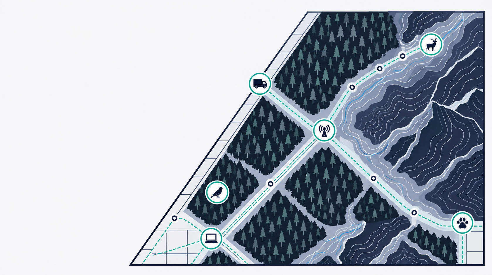

Wildlife Technology
Using technology and innovation to solve problems facing, and caused by, wildlife
The problem
From climate change to urbanization, ocean acidification to plastic pollution, our activities affect the quality of life in the wild in ways we are only just beginning to be able to measure. Many of these changes push humans and animals closer together, which creates or exacerbates challenges: wild animals eat our crops, spread diseases, kill livestock, and damage infrastructure. These multifaceted problems are usually examined from the perspective of conservation or human wellbeing, but real solutions can only come from considering wildlife and people at the same time – and the infrastructure for understanding wild animal welfare is stuck in the basic science phase.
What we do
Wildlife Technology designs programs to close the gap between basic science and animal interventions. We use developing tools from the innovation landscape — ARPA-style coordinated research programs, milestone payments, focused research organizations — and apply them to the problems that will do the most to solve issues facing and caused by wildlife.
To do this, we focus on developing talent, scoping new program areas, and running coordinated, time-bound programs focused on vetted issues.
Current priorities
We have several programs in different stages of scoping.
-
1.Rodent fertility control{{ caret0 }}
Addressing the limitations of existing rodent control products by developing a solution that is safe for people as well as the environment, humane for rodents and other wildlife, and actually works against the forces of compensatory mortality and immigration – two factors that have limited the success of rodenticides to date.
-
2.Welfare indicator development{{ caret1 }}
Extending the feasibility of animal welfare assessment in the wild by developing three to five indicators that work across a large taxonomic category (e.g., all mammals), can be deployed in the field at reasonable cost, and integrate welfare over a meaningful portion of an animal's lifespan (e.g., at least 10%).
-
3.The ecology of bird-window collisions{{ caret2 }}
Understanding the ecological and welfare costs of bird-window collisions, an understudied phenomenon affecting somewhere between hundreds of millions and billions of birds per year in the US alone.
-
4.Wildlife vaccination{{ caret3 }}
Identifying and developing treatment for a disease that affects vast numbers of wild animals, but is ecologically safe to eliminate.
We’re also exploring several other areas as candidates for scoping, including vulture conservation, improving near-term ecological forecasting, better estimating invertebrate populations, and reducing reliance on managed pollinators.
Team

Advisors


Supporting our work
The Wildlife Technology Fund is primarily supported by the EA Animal Welfare Fund. If you’d like to support our work, contact mal.graham@renphil.org
If you’re a scientist with an interest in one of our program areas, you can let us know by filling out this form.